Eleven

Uma garota com habilidades sobrenaturais.
Ficha do personagem
- Nome: Eleven.
- Universo: Hawkins.
- Categoria: personagem da série.
Um arquivo de fã dedicado aos mistérios de Hawkins.

Explore a cidade, conheça os personagens e descubra os mistérios do Mundo Invertido.
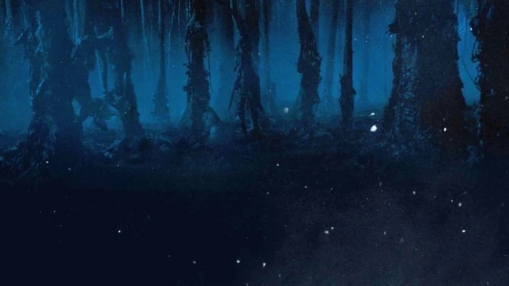
Este projeto é um guia de fã criado para praticar HTML e organizar informações sobre a série.
Stranger Things mistura ficção científica, suspense, aventura, drama e terror.
A história acompanha moradores de Hawkins diante de eventos inexplicáveis.
Uma garota com habilidades sobrenaturais.

Um dos amigos mais próximos de Eleven.
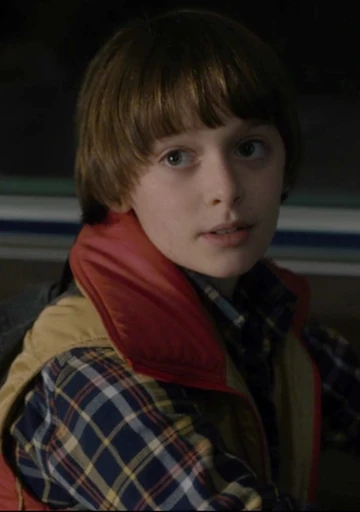
Seu desaparecimento dá início aos acontecimentos da série.
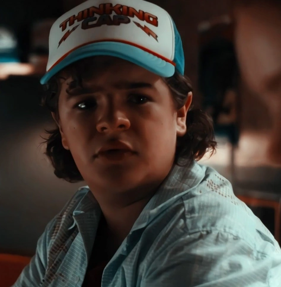
Inteligente, curioso e bem-humorado.

Corajoso e leal aos amigos.
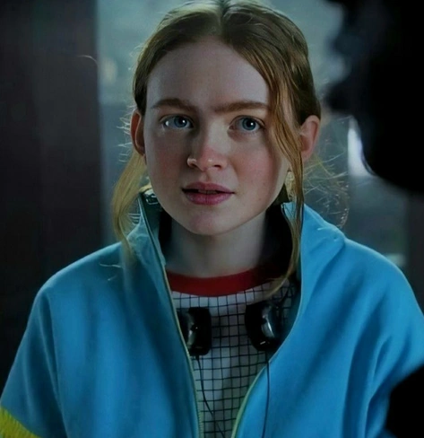
Independente, determinada e fã de música.
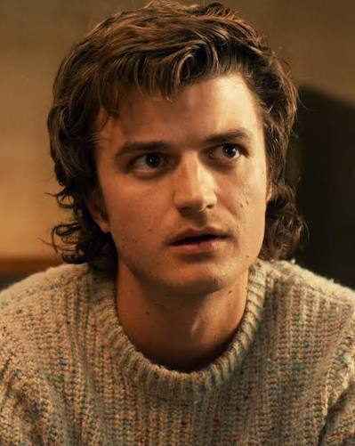
Um jovem que demonstra coragem e lealdade.
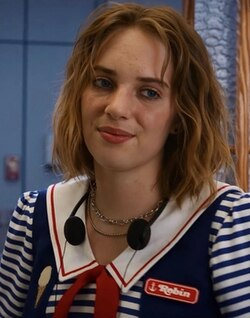
Inteligente, observadora e amiga de Steve.

Chefe de polícia de Hawkins.

Mãe de Will e Jonathan.

Irmão mais velho de Will.

Esperta, confiante e cheia de personalidade.
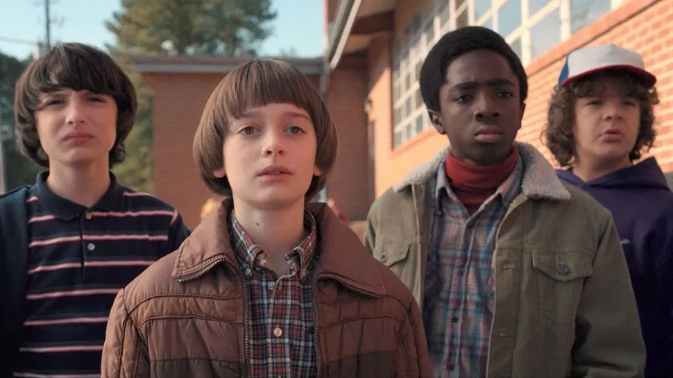
Esta seção reúne anotações e informações gerais sobre a 1ª temporada.
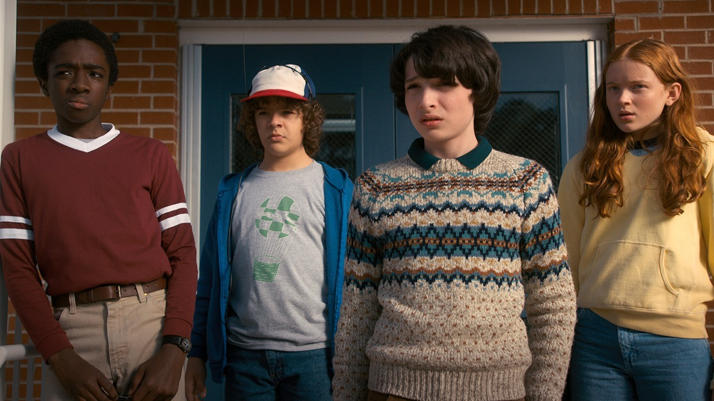
Esta seção reúne anotações e informações gerais sobre a 2ª temporada.

Esta seção reúne anotações e informações gerais sobre a 3ª temporada.

Esta seção reúne anotações e informações gerais sobre a 4ª temporada.

Esta seção reúne anotações e informações gerais sobre a 5ª temporada.
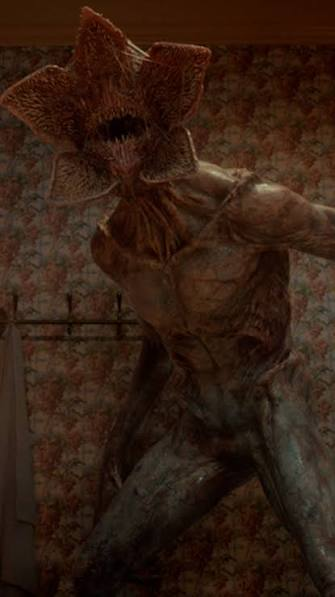
Uma criatura perigosa associada ao Mundo Invertido.
Registro de criatura para consulta dos fãs.

Criaturas que lembram versões menores do Demogorgon.
Registro de criatura para consulta dos fãs.

Uma entidade ameaçadora ligada ao outro lado.
Registro de criatura para consulta dos fãs.

Uma presença assustadora que ameaça Hawkins.
Registro de criatura para consulta dos fãs.
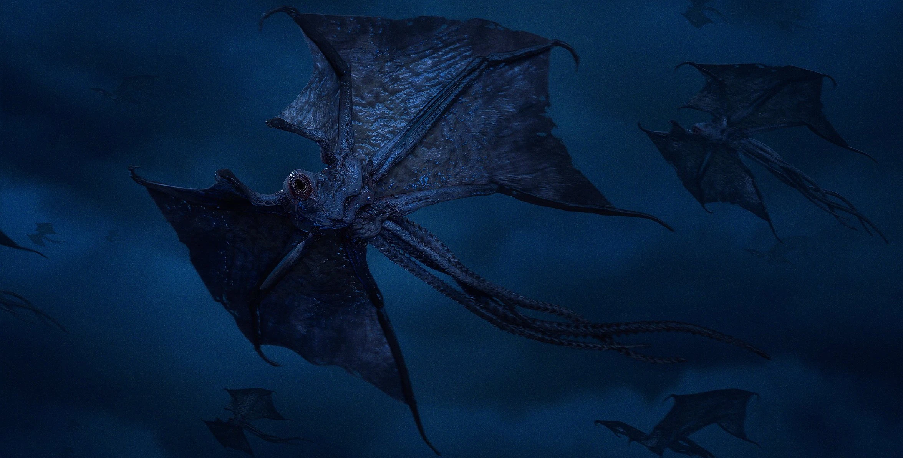
Criaturas voadoras encontradas no Mundo Invertido.
Registro de criatura para consulta dos fãs.

Laboratório de Hawkins é um dos cenários associados aos acontecimentos da história.
Mundo Invertido é um dos cenários associados aos acontecimentos da história.

Casa dos Byers é um dos cenários associados aos acontecimentos da história.

Shopping Starcourt é um dos cenários associados aos acontecimentos da história.

Escola de Hawkins é um dos cenários associados aos acontecimentos da história.

Fliperama é um dos cenários associados aos acontecimentos da história.

Cabana de Hopper é um dos cenários associados aos acontecimentos da história.

As bicicletas acompanham as aventuras do grupo.
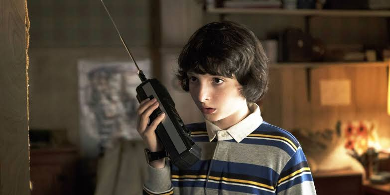
Um meio de comunicação entre os amigos.

Equipamento utilizado para comunicação.
A música ajuda a construir a atmosfera da série e reforça momentos importantes.


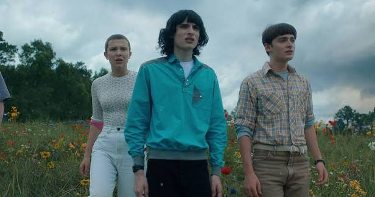